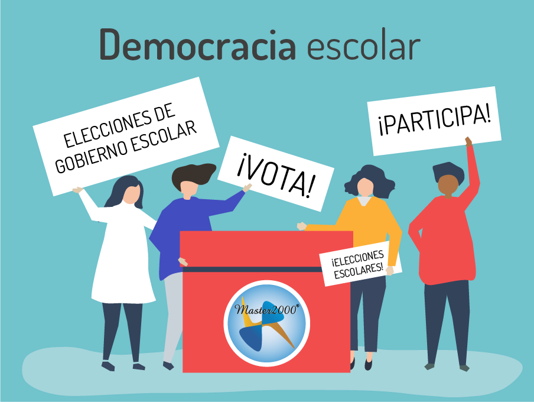
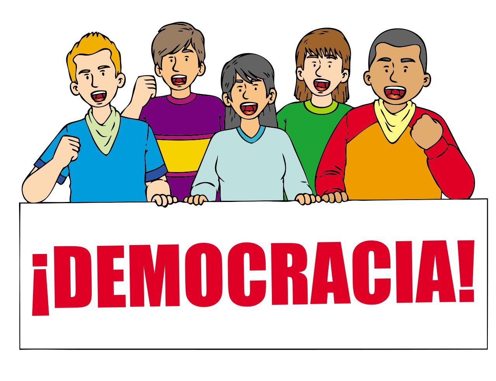

Luciana Lopera Caceres
Isabella Machado Martinez
democracia escolar
es un eje transversal que potencia el desarrollo de novedades, es como lograr el objetivo de conocimientos, situaciones, vivencias, sensaciones y recrearlas de diversas maneras, se reconoce como un pilar fundamental y que hace parte de la historia, de las practicas pedagógicas de los docentes. Nos referimos a las relaciones de poder en la escuela, entre los distintos estamentos y organismos del gobierno escolar de una institución educativa, los cuales hacen parte de ese motor social que se llama proceso educativo. En la educación secundaria colombiana, la historia de la democracia escolar está llena de luchas y victorias por parte de la comunidad educativa, es decir, estudiantes, maestros y padres de familia, donde los estudiantes han sabido ser protagonistas de esta lucha en momentos como los años 60‘s y 70’s, donde las decisiones centrales estaban a cargo del respectivo rector sin participación estudiantil alguna. Sin embargo, el movimiento estudiantil de la época en función de la lucha por la democracia en la escuela, deciden conformar sin que existiera reconocimiento legal, los Consejos Estudiantiles como un espacio y una herramienta para la participación de la comunidad estudiantil en las decisiones centrales que afectaban los intereses y necesidades de la comunidad estudiantil.
El propósito de la democracia es qué todos lo colegio sean capaces de crear, dirigir y regular sus acciones educativas, mediante procesos de participación real de la comunidad en la toma de decisiones, la vigilancia social, el control y la rendición de cuentas.
La democracia escolar es un sistema de gobierno que permite que los estudiantes expresemos nuestras opiniones sin ser juzgados por alguien, en la democracia todos merecemos respeto y una consideración para que nuestras voces sean escuchadas sin importar nuestra edad o nuestras diferencias, siempre podemos dar a conocer lo que pensamos. La democracia escolar se construye por medio de los estudiantes que participan de ella, teniendo en cuenta sus situaciones, vivencias y sensaciones, dependiendo de cómo la consideren, de lo importante que es dicha transformación escolar; aquí evidenciamos lo que nos plantean, normas, derechos y deberes y esa persona que quedo elegida por medio de una participación democrática y pasiva, es aquella que representara a todos los individuos que pertenecen a nuestra institución a nivel de la gobernación escolar.
La democracia se considera como una forma de gobierno justa y de convivencia educativa para vivir en armonía. En una democracia ideal la participación de los estudiantes es el factor que materializa los cambios, por lo que es necesario que entre el consejo estudiantil establezcan un diálogo para alcanzar los objetivos deseados. Las normas que se aplican en la democracia escolar son, la elección del representante de grupo de los estudiantes, la elección del consejo estudiantil (personero, contralor, etc.), la elección de representante de padres de familia, el reconocimiento o la izada de bandera, etc.
 